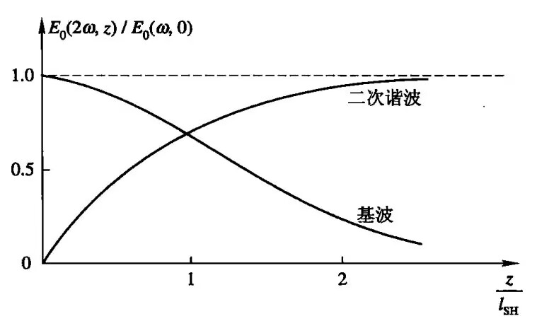

二次谐波产生是非线性光学混频中，最典型、最重要、最基本的技术，也是应用最广泛的一种技术.
二次谐波产生是和频产生的特殊情况，但不能简单地将\(\omega_1 = \omega_2\)代入上节对和频产生进行讨论得到的结果中.
这是因为当\(\omega_1 = \omega_2\)时，除由\(\omega_1\)与\(\omega_2\)产生的和频外，还分别有\(\omega_1\)与\(\omega_2\)的二次谐波产生过程，但在上节讨论和频产生规律时，并没有考虑这些二次谐波产生过程.
对于二次谐波产生过程，设\(k'\)与\(k\)分别表示频率为\(2\omega\)和\(\omega\)的光波传播常数，则按单色平面光波在稳态条件下的非线性耦合波方程，二次谐波产生过程中的耦合波方程为：
$$\frac{\mathrm{d}E(2\omega, z)}{\mathrm{d}z} = \frac{2i\omega^2}{k'c^2}[\chi^{(2)}(\omega, \omega)\vdots\boldsymbol{a}(2\omega)\boldsymbol{a}(\omega)\boldsymbol{a}(\omega)]E^2(\omega, z)e^{i\Delta kz}$$ $$\frac{\mathrm{d}E(\omega, z)}{\mathrm{d}z} = \frac{i\omega^2}{kc^2}[\chi^{(2)}(2\omega, -\omega)\vdots\boldsymbol{a}(\omega)\boldsymbol{a}(2\omega)\boldsymbol{a}(\omega)]E(2\omega,, z)E^*(\omega, z)e^{-i\Delta kz}$$若介质在\(\omega\)与\(2\omega\)处是无耗的，则张量\(\chi^{(2)}(\omega, \omega)\)为实数，则：
$$\chi^{(2)}_{\mu\alpha\beta}(\omega, \omega) = \chi^{(2)}_{\mu\alpha\beta}(-2\omega, \omega) = \chi^{(2)}_{\mu\alpha\beta}(2\omega, -\omega)$$上式中的最后一个等式利用了极化率张量的时间反演对称性.
由以上两式消去\(\chi^{(2)}_{\text{eff}}\)，可得：
或用能流密度表示：
$$S' + S = C$$[设]初始条件为：
$$\left.E(\omega, z)\right\rvert_{z=0} = E(\omega,0),\quad \left.E(2\omega, z)\right\rvert_{z=0} = 0$$[设]频率为\(\omega_l(l = 1,2)\)的光电场表示式为：
$$\boldsymbol{E} = \boldsymbol{a}(\omega_1)\left[\frac{1}{2}E_0(\omega_l, z)e^{-i(\omega_l t - k_l z + \phi_{\omega_l})}\right] + \text{c.c.}$$ $$\therefore E(\omega_l, z) = \frac{1}{2}E_0(\omega_l, z)e^{-i\varphi_l}$$ $$\therefore E_0^2(\omega, z) = E_0^2(\omega, 0) - \frac{k'}{2k}E_0^2(2\omega, z)$$相位匹配条件下，即\(\Delta k = 0\)时，有：
由于上式除指数项外，其他各量都是实数，故要求：
该方程的解为：
这里能否用arctanh（定义域是否符合要求）还没搞清楚.
以及，这里省略了常数C.
[令]表征二次谐波产生过程速率的特征长度为：
$$l_{\text{SH}} = \left[\frac{\omega^2}{k'c^2}|\chi^{(2)}_{\text{eff}}|E_0(\omega, 0)\right]^{-1}$$ $$\therefore E_0(2\omega, z) = E_0(\omega, 0)\tanh\left(\frac{z}{l_{\text{SH}}}\right)$$\(E_0(2\omega, z)\)与\(E_0(\omega, z)\)的图解关系如图所示：

由图可见：
在完全相位匹配的条件下，二次谐波场的振幅从零开始逐渐增大；
\(z = l_{\text{SH}}\)时，约有一半的基波功率转变为二次谐波功率；
最后，基波功率全部转变为二次谐波功率.
\(z\)很小时，\(\tanh\left(\frac{z}{l_{\text{SH}}}\right)\approx \frac{z}{l_{\text{SH}}}\).
此时，二次谐波振幅\(E_0(2\omega, z)\)随\(z\)线性增大，增大的速率由\(l_{\text{SH}}\)表征.
所产生的二次谐波相位\(\varphi'\)与基波相位\(\varphi\)满足关系.
若未完全达到相位匹配条件（\(\Delta k\neq 0\)），且假定在小信号近似的条件下工作，则二次谐波产生耦合波方程的\(2\omega\)式可表示为：
$$\frac{\mathrm{d}E(2\omega, z)}{\mathrm{d}z} = \frac{2i\omega^2}{k'c^2}\chi^{(2)}_{\text{eff}}E^2(\omega, 0)e^{i\Delta kz}$$小信号近似下，认为二次谐波产生的能量相对于基波能量非常小，因此基波在传播过程中几乎没有能量损失，即：
$$|E(2\omega, z)|^2\ll |E(\omega, z)|^2$$ $$\because |E(\omega, z)|^2 = |E(\omega, 0)|^2 - \frac{k'}{2k}|E(2\omega, z)|^2$$ $$\therefore |E(\omega, z)|^2 \approx |E(\omega, 0)|^2$$由此可见，相位失配条件下，当基波与二次谐波通过非线性介质时，二次谐波的光电场振幅在0与最大值\(2E_0(\omega, 0)/(\Delta k l_{\text{SH}})\)之间振荡，振荡周期为\(4\pi/\Delta k\).
根据二次谐波相干长度\(L_c\)的定义（\(L_c = \pi/\Delta k\)）可以看出，二次谐波光电场振幅的振荡周期四倍于相干长度，而二次谐波功率的振荡周期为相干长度的两倍.
这个相干长度的定义出现在《非线性光学》（石顺祥）的第三章.
从二次谐波产生过程的能量耦合角度来看，在第一个相干长度范围内，基波能量向二次谐波耦合，在第二个相干长度范围内，则是二次谐波能量向基波耦合.
当相位失配程度\(\Delta k\)增大时，二次谐波的最大振幅减小.
由以上讨论可以看出：为高效产生二次谐波，除了采用具有高非线性的介质外，还应满足相位匹配条件.
实际工作中，引入了有效非线性光学系数\(d_{\text{eff}}\)的概念，并指出：为高效产生二次谐波，\(d_{\text{eff}}\)越大越好.
前面求解三波混频耦合波方程时，引入了有效非线性极化率\(\chi^{(2)}_\text{eff}\).
例如：对于频率为\(\omega_3\)的和频过程，有：
$$\begin{align} \chi^{(2)}_\text{eff} &= \boldsymbol{a}(\omega_3)\cdot\chi^{(2)}(\omega_1, \omega_2):\boldsymbol{a}(\omega_1)\boldsymbol{a}(\omega_2)\\ &= \chi^{(2)}(\omega_1, \omega_2)\vdots \boldsymbol{a}(\omega_3)\boldsymbol{a}(\omega_1)\boldsymbol{a}(\omega_2) \end{align}$$这个有效非线性极化率，实际上表示了频率为\(\omega_1\)与\(\omega_2\)的两个单位光电场，通过\(\chi^{(2)}(\omega_1, \omega_2)\)产生频率为\(\omega_3\)的非线性极化强度在\(\boldsymbol{a}(\omega_3)\)方向上的投影.
由讨论可见：耦合波方程的解与有效非线性极化率有关，而不与非线性极化率张量中的每个元素单独发生关系.
从物理上来看这是很显然的，因为所产生的非线性极化强度中只有与\(\boldsymbol{a}(\omega_3)\)方向一致的分量才与\(\boldsymbol{a}(\omega_3)\)偏振方向的光波发生耦合，而与\(\boldsymbol{a}(\omega_3)\)方向垂直的分量与\(\boldsymbol{a}(\omega_3)\)偏振方向的光波不发生耦合.
将频率为\(\omega_3\)的和频过程的有效非线性极化率改写为：
明显可见：有效非线性极化率除表征介质的非线性特性外，还与混频光场的偏振方向有关.
前面已经讨论过，为在晶体中实现相位匹配，参与非线性作用的三个光波应取特定的偏振方向：
对于正单轴晶体，三个光波的偏振方向\(\boldsymbol{a}(\omega_1),~\boldsymbol{a}(\omega_2),~\boldsymbol{a}(\omega_3)\)应取\(eeo\)（第Ⅰ类相位匹配）或\(eoo\)（第Ⅱ类相位匹配）；
对于负单轴晶体，\(\boldsymbol{a}(\omega_1),~\boldsymbol{a}(\omega_2),~\boldsymbol{a}(\omega_3)\)应取\(ooe\)（第Ⅰ类相位匹配）或\(oee\)（第Ⅱ类相位匹配）.
对于同一类晶体，这四种过程的有效非线性极化率是不同的，但因为\(\boldsymbol{a}(\omega_1),~\boldsymbol{a}(\omega_2),~\boldsymbol{a}(\omega_3)\)不是取\(o\)光偏振就是取\(e\)光偏振，所以为了推导上述四种过程的有效非线性极化率的表达式，可以首先写出\(o\)光宇\(e\)光的单位偏振矢量，然后根据各类晶体的非线性极化率张量\(\chi^{(2)}\)的形式，利用式求出各类晶体中两种相位匹配形式、四种作用过程的有效非线性极化率.
在非线性光学中，除了采用非线性极化率张量\(\chi^{(2)}\)描述非线性作用外，实验工作者习惯上更常采用非线性光学系数\(\boldsymbol{d}\)描述非线性作用.
若用\(\boldsymbol{d}\)代替三波混频耦合波方程中的\(\chi^{(2)}\)，同样可以得到有效非线性光学系数\(d_\text{eff}\)：
$$d_\text{eff} = \boldsymbol{a}(\omega_1)\cdot\boldsymbol{d}(\omega_1, \omega_2):\boldsymbol{a}(\omega_1)\boldsymbol{a}(\omega_2)$$它是一个标量，同样表征了光混频中的光波耦合.